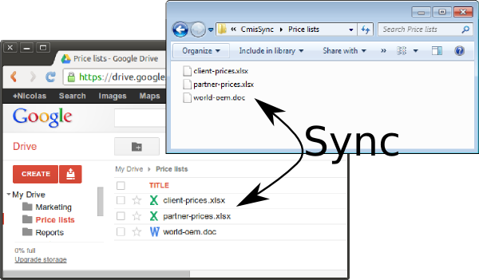
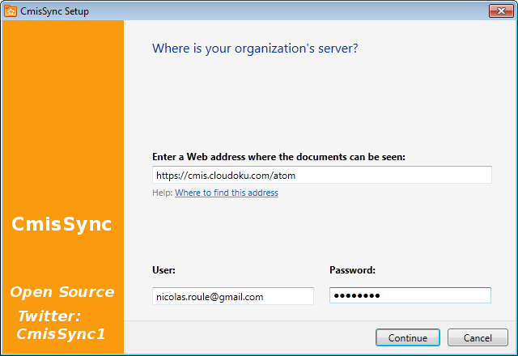

CmisSync allows you to keep in sync with your Google Drive, and read/edit the documents even when offline:
Step 1
Step 2
Run CmisSync.
After a few welcome screens, it will start running as an icon in the tray:
Click on the tray icon and select "Add a CMIS folder".
Step 3
In the wizard that appears, enter https://cmis.cloudoku.com/atom and your Google username/password:
Step 4
The next screen shows your Google Drive folders.
Choose the folder you want to sync:
That's all!
CmisSync will now sync your Google Drive folder to your desktop, whenever you have an Internet connection.
The Google Drive CMIS gateway is provided by third-party service Cloudoku, it works for Google Apps accounts too.
CmisSync does two-way sync, which means you can modify/add files.
Should a conflict occur, a backup is made and you can handle it by choosing which version to keep.
CmisSync is free and open source, programmers are very welcome!
While syncing is also possible with the Google client, the CmisSync client has the advantage to be Open Source, offering peace of mind and more integration possibilities. CmisSync allows synchronization of multiple accounts, which is impossible with the Google client. There is also GDocsDrive and Insync, but they are not free.